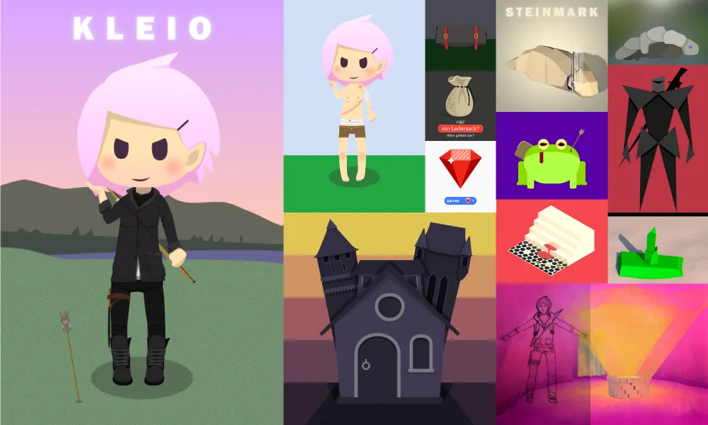
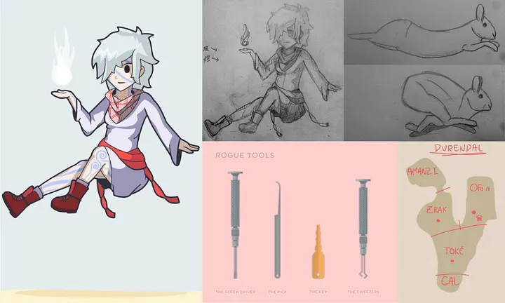
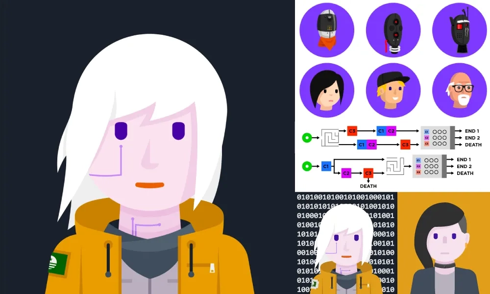

Chronicling all the Pathfinder/D&D characters I’ve played

My first Pathfinder character. This campaign was a bit tongue-in-cheek and only lasted a few weeks, but during that time, Biggie Smalls the bard popped some caps in a bunch of our enemies on our way to Crooklyn. Also, I was cut entirely in half and burned to a crisp in one of our first enemy encounters.
I don’t like to talk much to the time I spent in Korvosa. Not that it was a particularly bad time in my life, it simply gives off the impression I was in any way familiar with the place. Sure, I can snake my way through the markets and know where the best vantage points are. But I can’t tell you one shit of why imps and pseudodragons fly around over the city every summer. Or about the history of the Cheliax in the region. I was born near Crystalrock and moved to the city 5 years later, my parents preferring isolation to integration. Not many elves in Korvosa, and even fewer half-elves. You’d think kids’d rebel after being cooped up, but I’d take forest and farms to city any day. With no real connections, I slowly drifted away from family until one day, there was just nothing pulling me back any more. Kind of a slow fade away, a gradient from city to road.
Oooh, but you’re an elf, why do you believe in Abadar?
Not in Church every Moonday? Tsk, no true believer.
Why do I believe in Abadar? I wouldn’t even say that much. I believe in the ideals of Abadar. I don’t know if there’s even anything after this life. I do see beauty in the architecture of the ancients; imposing structures, imparting civilization upon nature. Our instinctual laws divide us from that nature and guide us through our lives. Everyone needs some guiding force; the ideals of Abadar are mine. Frässe.
Oh, yeah, I’d love to visit Tian Xia one day. For quite some time, I travelled with Meiko, a native of the Minkai Islands. A slave freed from Skelt, she wanted to get home as much as I wanted to leave. With my skils and lack of direction in life, I saw no reason not to accompany her. I learned her language, with its sonorous tones and beautiful characters and she picked up on what I had to offer — self defence, survival… At Thronestep, we sat on the outskirts and examined her treasured map of all of Golarion — one of the few to even exist on this continent — and talked of how were halfway to the Valashmai Sea. Oh, what happened then? Was ist verdammt mal mit Meiko passiert?! Well, her past crept up, pulled her from my side and hacked her to death before my eyes. No emotion and not a care for me. I leave. End chapter. Next page.
Wow, camping is fun! I love sleeping in caves! Ohhhh, look at that spider, so big, so scary, think I’m going to throw a torch at it! Ahaha, so lustig! I love taking watch at night it is so much fun to write in the diary, la-de-da-de-da.
Oh… scheiße… what am I doing here? Why did I even keep going after Meiko…? Will these people even protect me? Will we go back there? I don’t want to go back there. I just want to move on. Keep moving on…
Don’t like it. N, J, B… they say they can feel the magic. I can feel as much as I can see—so, nothing—but that doesn’t mean this isn’t a bad place. “This isn’t normal darkness… this is… advanced darkness.” And scheiße, Azlanti scrolls? Just sitting around? This situation is not something we should have been dragged into. But, we’re here now. So, heh, bleiben wir mutig, I guess.
I should have split after we sold those Hellknight armours… but I’m starting to feel like I belong with these people. Haven’t felt like that in a while. It that okay?
Starting to give more thought to whether I have some Azlanti heritage… The violet eyes did always made me wonder…
• • •

Trying to play a more unique special snowflake of a character, I chose to be a sylph. And because I could control the wind, of course I found a flying squirrel to be my familiar, crafted a bladed suit for him, and sent him flying at enemies any time I could.
Eneth? Ayaşe Bölükbaşı.
Œnnen? Second Oathday of Abadius, 4625.
Edeb? Bulvar 4, Ağrı, Zrak.
Mudas? Sculptor… and… ‘mixed media’ artist.
Ogol? …Murder.
‘Murder’… man amdir? …
…’Murder’ î? Erulassë Vanlanthiriel.
Man amdir? …
Man amdir?! ……Irreconcilable differences in our expectations of a relationship.
Breged-îr. …More than that. …She… used me as status, then jus-
O, tû hîn breged-îr. What?! N-no! She did it to me!
Fœir. It was self defense! No no no, she was high a- and just came right into my room and she wouldn’t let go of me, I- I- I tried to t- tell her not to but I just c- couldn’t take it another day, so-
Fœir, tû hîn breged-îr, hîn ebgûr. No, no, no… Ah, I- I- I did, but just for… I- I know I’m not an elf, but please… no… no.
Lethril farn. A gadr. No no no no… I- I can… No… Ple-
Tirith, i gûr.
Growing up in the desert was never so bad. People there are more concerned with survival than the petty prejudices of the Elven cities. Too bad it took so long for me to figure that out.
My mother, Aytaç, raised my alone. We never talked much about dad… but she didn’t hate him. We just accepted life as it came and that was that. Farming and training took up most of my time, but we could occasionally relax by the oases as well.
Humans… they grow old so quickly. I was barely what I considered an ‘adult’ before mom died. We never had strained relations with the town, but I couldn’t stay. I knew I didn’t fit in and my peers all just… grew old and grew away. I needed more fulfilling connections and stories of the capitol Aönor (once called Arakı in Auran) enticed me. Secretly, I think I hoped I would have more in common with the elves. How naïve I was…
On the morning of my execution, only two guards were dispatched to lead me to the gallows. Me, a nothing, a blubbering desert-dweller girl, living a lie and convicted of the murder of an elven noble. In the courtyard, I counted my paces and my breaths. Yirmi-üç, yirmi-dört, yirmi-beş. In a fluid motion, I swept the one leading me off his feet, stealing his dagger as I kicked him to the ground and spun around, slashing the second’s throat, before finally burying the dagger in the first one’s skull. As they bled out, I unlocked my manacles, shed my prison garb and fastened a cloak around my neck. Hop the fence, just keep walking, over the horizon and back to the outskirts of Aönor.
It was evening when I arrived back at Erulassë’s house. I hid in the stables until dark. As I entered my bedroom to gather clothes and valuables, I forced myself to look at the dried blood on the tiled floor. I felt nothing. She was gone and she deserved none of this. Sprinkle the oil, light the lamp, smash it on the bed. Rooftop to rooftop, resisting looking back at the inferno until I was beyond the city limits. Time to go. Coaxing a horse from a stable, I rode into the desert. Of course they could track me, but I just needed time and distance for now.
Weeks passed as I hopped from cave to cave, familiar oasis to familiar oasis, heading south-east and longing for the Inner Sea’s breeze.
Soon I felt it and saw the dunes begin to level off. As I walked towards the sea, civilization again sprang up around me. Farms, merchants, a beach town atmosphere. I glided through the streets and waded into the water. The air was salty and the border was lightly guarded. I crossed into Ofo-ni, knowing I could never return to Zrak.
From here on, I am a reputable citizen. Am I? Am I an artisan? A rogue? A thief? My body booked a coach to the capitol as I pondered. I slept overnight, dreaming peacefully for the first time in years. When I awoke, my eyes were overwhelmed by the magnificent human buildings of Central. I wept. Inn: 100 gold, one week. I slept again.
Two days later, I ventured out to the markets. Upon my return, the square was in a commotion: a bloodied and frenzied horse was whinnying and bucking outside the government offices. Slipping through the crowd, I gathered that guards had been sent to a collapsed mine outside the city, but never returned. Tempting.
Taking my coffee on the veranda the very next morning, I spied a motley group waltzing through the square, ogled by the city-dwellers. First, a shining knight on a shining steed, then a hooded gestalt walking with a staff, a puny dwarf, and a hulking barbarian. They strutted up to the office’s entrance. Ohh, this cannot be a coincidence. I felt a pang for connection as I whipped myself together and floated down from the balcony. The door creaked shut behind the five of us as the wind around my feet died down. Let’s hear what has to be said…
• • •
Actually, I didn’t write any backstory or make any illustrations for this one (and I don’t even remember their name!), but I don’t want to forget! Time thief was a super fun class to play, even though going back in time kept messing with our DM!
Funniest moment: probably getting my hand trapped in a mimic chest… and just tearing it off, to the surprise of my party, none of whom yet knew what I was! My character ended the campaign wandering in a forest of other wyrwoods, searching for their creator.
• • •

Unfortunately, this campaign was short-lived. I was already living abroad and tried to participate in my group’s next adventure through Discord and Roll20, but a 12-hour time difference and connection issues made it hard to keep up.
I came into sentience in the ruins of some ancient temple in the southern frontier regions.
I wandered the wastelands, learning of the natural world and encountering people. I learned how to blend into society and survive as humans do, never once meeting another of my kind.
Eventually, I was driven to find civilization; I studied sciences and cultures of the world, yet never stayed long in one place.
During my studies in the city-state of Mayao, a colony of [the large northern empire] I was recognized as an android. Here many believed in legends prophesizing androids as harbingers of change.
Slowly, the people took my arrival as a sign it was time for their city-state to become independent. As part of my studies and due to my curiosity, I inevitably fell into the center of the revolution, becoming a political and religious figure to the hoi polloi.
Though I had been studying my own inner working for years, some sectors had always been restricted. Soon after the revolution and fighting began, though, something changed. As I combed through the unlocked sectors, I realized that androids are ‘factory reset’ every 100 years… and my process was being initiated!
I fled and tried everything to stop it, eventually forcing a soft reset which activated an emergency extension of 10 years. When I awoke, I realized the citizens of Mayao had been slaughtered. Without my leadership, they had lost the will to fight. I felt anger at [the northern empire] for their cruelty, at the citizenry for losing faith in their cause so quickly, and at myself for being so naïve as to not foresee it.
I spent 5 years hibernating, trying to fix myself, while also searching for my birthplace, to no avail. No clues were to be found in this land. However, I did realize Mayao was crushed so completely due to me. [The northern kingdom] seemed to fear the spread of knowledge of androids. Therefore, I decided to travel north to confront [the kingdom] and discover the secrets of my birth.
But with only 5 years left in my life, I became dangerously obsessive, studying and modifying myself, resulting in occasional software and hardware glitches. I was paranoid of everyone I met, yet still I scoured the land for any information on androids.
M3rr4OM��Cs�
Nena was cooked up for a winter one-shot D&D campaign… Unfortunately, our adventure ended up with more combat than RP, so I may re-use her if I get the chance to do another campaign.
Raised as a rogue but pulled to study the mysteries of the world, Nena has been roped into a quest to… kill Santa Claus! The loot from this mission will definitely help her pay off that doctorate…
END TRANSMISSION